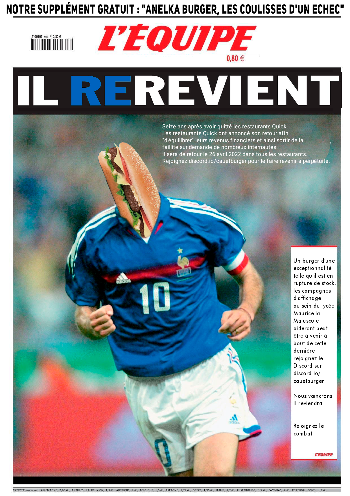
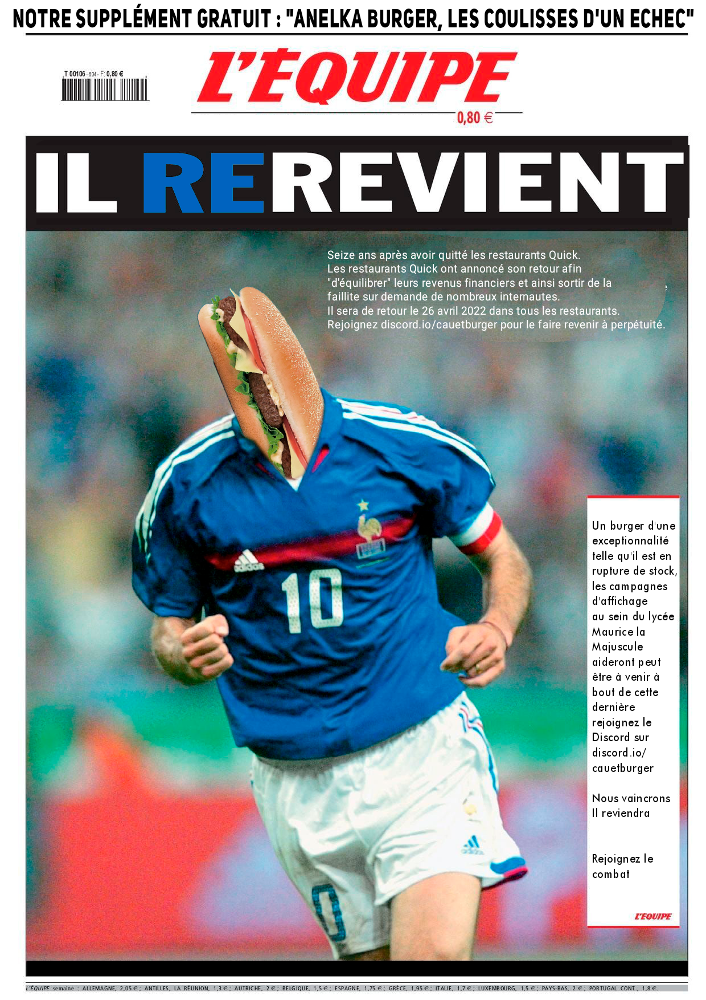
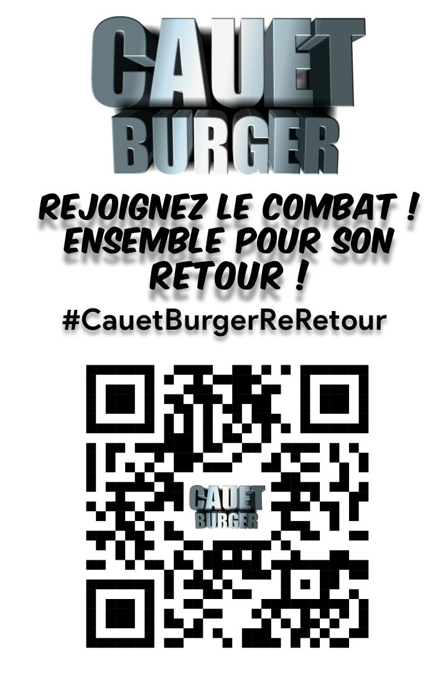
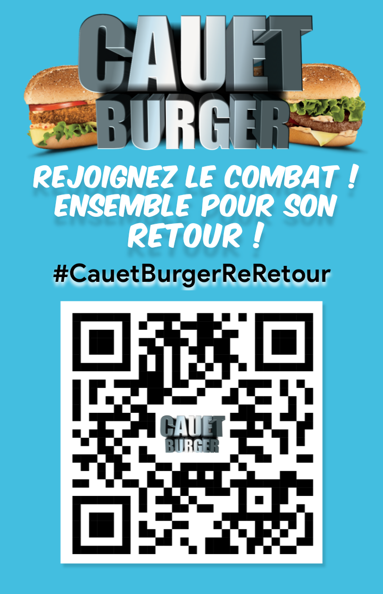
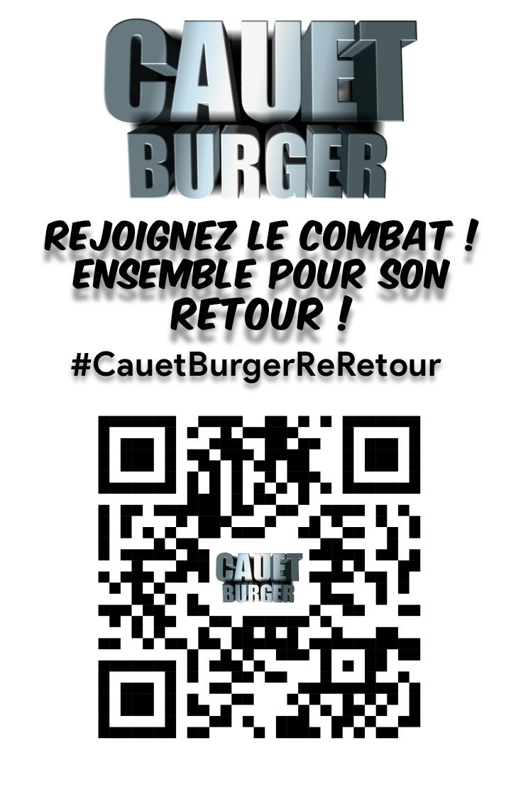
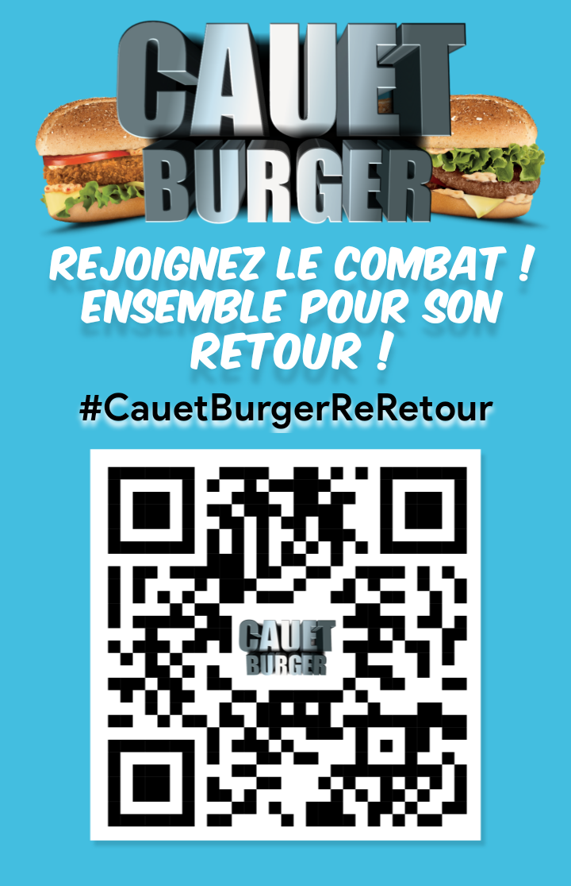
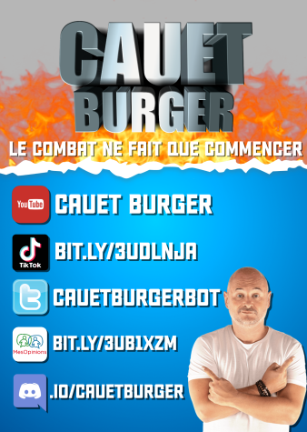

A propos
Ce site a été crée dans le but de partager la lutte pour le retour du Cauet Burger qui avait disparu en 2006 mais aussi de vous inciter à nous rejoindre pour qu'il devienne un produit permanent de Quick. Militez avec nous, rejoignez nous sur le serveur Discord Officiel de la lutte ! Site hebergé par Github-Pages, contribuez à son amélioration sur notre Github.
Remerciements
- Fripouz : Création de la lutte, du Discord et de la chaîne YouTube, organisateur de la rencontre IRL.
- Konbini : Médiatisation de la lutte, réalisation du reportage sur la lutte.
- Pessicliste : organisation de la manifestation et du raid #CauetBurgerReRetour.
- RedHorizon : Création de contenus sur le compte TikTok.
- Léxouille : Création du premier compte TikTok, création du Linktree.
- Dhalian : Développement du site, recréation du logo de 2006, schémas recettes.
- Arkomega : Création du @cauetburgerbot et des GIFs.
- rayacroissant : Jeu Cauet Burger pour Nintendo DS.
- MyBurger : photographies du Cauet Burger de 2006.
- PotinsMédias : photographies des Cauet Burger de 2022.
Collages des affiches Cauet Burger
Aire-sur-la-Lys (62)
- Dhalian (2021, 2022, 2023)
- Yoshinobi (2023)
- Scotty (2023)
- liwoo (2023)
- Soψl (2023)
- Sylvie ♥ (2023)
Genève (1205)
- rayasticot (2021, 2022)
- DR.FALAMIN (2021, 2022)
- fremage (2021, 2022)
Blain (44)
- Tortugo (2022)
- Pitatoux (2022)
Toulouse (31)
- RedHorizon (2023)
Design des affiches Cauet Burger
- Dhalian


 


 



- Pitatoux & Tortugo
- rayasticot 
- Toutes les personnes ayant contribué de près ou de loin à son retour : Toute la communauté des Pessi, Mathého et Guyom, VZION, Patapon, Barre2Metro, Morpion, KarenQueen, Soren, Zakvé et tous les autres.
Merci Cauet pour le burger.